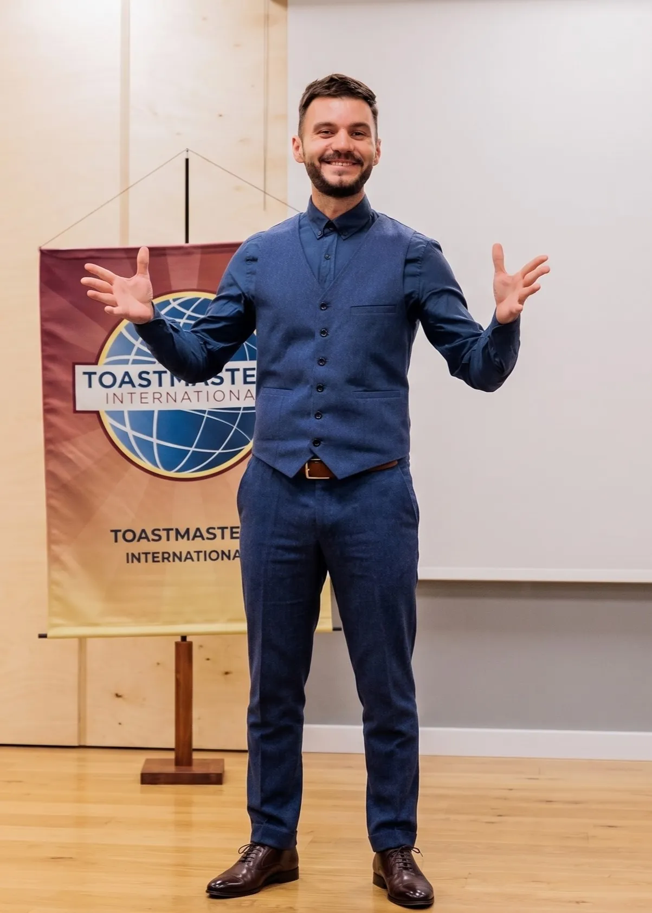

Public Speaking
în Timișoara
Miercuri 19:30–21:00
Cowork The Office, Timișoara
Intrare liberă

„Misiunea unui club Toastmasters este de a oferi o experiență de învățare într-un mediu pozitiv și de suport reciproc, prin intermediul căruia fiecare membru să își dezvolte abilitățile de comunicare și de leadership, toate acestea ducând la dezvoltarea personală, profesională și la creșterea încrederii în sine."
Toastmasters International
Vorbim sincer, dăm feedback onest și ne respectăm cuvântul față de colegi și față de noi înșine.
Fiecare voce contează la noi, indiferent că ești la primul discurs sau la al cincizecilea.
Ne implicăm în club nu doar pentru noi. Un club mai bun înseamnă creștere pentru fiecare.
La fiecare ședință ne propunem să fim puțin mai buni decât data trecută.
Timișoara Toastmasters este primul club Toastmasters înființat în România. A început cu un grup de oameni care credeau că abilitatea de a vorbi clar și convingător se poate învăța, iar cel mai bun mod e practica, nu teoria.
17 ani mai târziu, peste 200 de membri au trecut prin club. Unii au vorbit pentru prima dată în public la noi. Alții au ajuns să conducă echipe, să prezinte la conferințe sau să devină traineri de succes.
Fie că ești la primul discurs sau ai ani de experiență în spate, locul tău este aici.
Membrii susțin discursuri pregătite din programul Pathways, fiecare cu obiective clare de comunicare și structură bine definită. De la discursuri introductive la prezentări complexe cu date și argumente.
Primești un subiect și ai 1–2 minute să vorbești despre el. Excelent pentru a-ți dezvolta gândirea rapidă și spontaneitatea în fața unui public.
Fiecare discurs primește feedback detaliat de la un evaluator desemnat: ce a mers bine și ce poate fi îmbunătățit. Un feedback concret, aplicabil chiar de la ședința următoare.
Un sistem dovedit de peste 100 de ani. Iată ce dezvolți concret ca membru Timișoara Toastmasters.
Echipa care organizează, coordonează și inspiră clubul în fiecare săptămână.


Poți veni gratuit ca invitat, să observi, să participi dacă vrei și să decizi singur dacă Toastmasters e pentru tine.